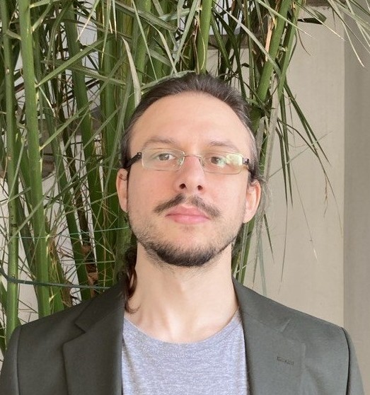

Edoardo Marchi
Postdoctoral researcher, Iovino Lab.
Max Planck Institute of Immunobiology and Epigenetics, Freiburg im Breisgau, Germany
I am a physicist working on the three-dimensional organization of chromatin. I build polymer models of chromosomes, that include loop-extrusion and the phase separation of A and B compartments. I compare these models with experimental data from Hi-C and fluorescence microscopy to understand the physical principles of chromosome folding.
I did my PhD at the University of Milan, where I used statistical mechanics and stochastic processes to study the dynamics of polymer models of chromatin. After that, I also worked on data-driven projects outside chromatin: the microbial ecology of soils and the computational analysis of rare diseases.

Selected publications
- Length-dependent residence time of contacts in simple polymeric models Physical Review E 111(1) DOI
- Locality of contacts determines the subdiffusion exponents in polymeric models of chromatin Physical Review E 107(6) DOI
- Cohesin and CTCF control the dynamics of chromosome folding Nature Genetics 54(12), 1907–1918 DOI